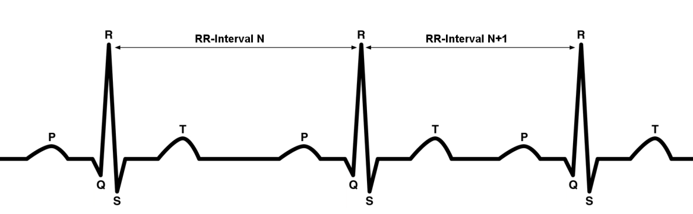

3. HRS（心率服务）
3.1. 简介
为了适用于健身应用，心率服务提供了心率数据和心率传感器相关的其他数据。
一致性
如果设备声称与此服务一致，所有指示为此服务的强制性功能应以指定的方式支持(过程强制)。这也适用于指定支持的所有可选和有条件的功能。所有的强制功能，可选的和有条件的功能，都需要作为蓝牙认证计划的一部分进行验证。
服务依赖
此服务不依赖于任何其他服务。
蓝牙规范发布兼容性
此规范兼容任何蓝牙核心规范[1]，包括通用属性配置文件（GATT）规范和低功耗蓝牙控制器规范。
GATT子规程要求
本节中的要求代表心率传感器（服务器）的最低要求。若客户端和服务器都支持，也可以使用其他 GATT 子规程。
| GATT 子规程 | 要求 |
|---|---|
| 写特性值 | C.1 |
| 通知 | M |
| 写特性描述符 | M |
| 读特性描述符 | M |
表 1.1：GATT 子规程要求
C.1：如果支持“心率控制点”特性，则必须提供，否则不包括在此服务中。
传输依赖
这项服务应通过 LE 方式进行。
错误码
此服务定义了以下“属性协议应用程序”错误代码：
| 名称 | 错误码 | 描述 |
|---|---|---|
| 控制点不支持 | 0x80 | 控制点的值不支持 |
字节传输顺序
此服务使用的所有特性都应以最低有效字节在前的方式传输（即小端模式），[2]中的特性定义规定了最低有效字节。
3.2. 服务声明
心率服务需要被实例化为《主要服务》。
此服务 UUID 应设置为《心率服务》，分配给《心率服务》的 UUID 在 [2] 中定义了。
3.3. 服务特性
心率服务提供了以下特性。除非另有说明，否则此服务仅允许每个特性的一个实例。
| 特性名 | 要求 | 强制属性 | 可选属性 | 安全权限 |
|---|---|---|---|---|
| 心率测量 | M | 通知 | 无 | |
| 心率测量客户端特性配置描述符 | M | 读，写 | 无 | |
| 身体传感器位置 | O | 读 | 无 | |
| 心率测量点 | C.1 | 写 | 无 |
表 3.1：心率服务特性
C.1：如果支持消耗能量的特性则是强制的，否则将被排除。
注意：
安全权限为 None 意味着此服务不会强加任何要求。
未列出为强制或可选的属性将被排除在外。
心率测量
心率测量特性用于发送心率测量结果。特性中包括一个 Flags 字段（用于显示可选字段和受支持特性的存在）、一个心率测量值字段，以及一个能量消耗字段和一个 RR间隔字段（取决于 Flags 字段的内容）。RR 间隔字段表示心电图波形中连续两个R波之间的时间（见图3.1）。

RR 间隔字段的长度可变，对于一个 23 字节的 ATT_MTU，可能包含 0 个或最多 8 个或 9 个 RR 间隔字段，具体取决于心率测量值的格式以及能量消耗字段是否存在。
特性行为
当客户端特性配置描述符被配置为通知且心率测量可用时，应该在连接中通知此特性。
心率测量特性包含时间敏感数据，因此适用于第 3.4 节定义的时间敏感数据和数据存储要求。
Flags 字段
Flags 字段应包括在心率测量特性中。
标志字段中的保留供将来使用（RFU）位应设置为 0 。
在以下小节中定义标志字段的位。
心率值格式位
心率值格式位（Flags 字段的0位）表示心率测量值字段的数据格式是 UINT8 还是 UINT16 。
当以 UINT8 格式发送心率值格式时，心率值格式位应设置为 0。以 UINT16 格式发送心率值格式时，心率值格式位应设置为 1。
连接期间，心率值格式位的值可能会更改。
传感器接触状态位
传感器接触状态位（Flags 字段的第 1 位和第 2 位）指示是否支持传感器接触特性，如果支持，则指示是否检测到皮肤接触。
如果服务器支持传感器接触特性，则传感器接触支持位（Flags 字段的第 2 位）应设置为 1。如果服务器不支持传感器接触特性，则传感器接触支持位应设置为 0。
在连接时，传感器触点支持位的值是静态的，而此时传感器接触状态位的值可能会改变。
如果支持传感器接触特性，并且如果设备检测到与皮肤没有接触或接触不良，则传感器接触状态位（标志字段的位 1）应设置为 0，否则设置为 1。
能量消耗状态位
能量消耗状态位（标志字段的第 3 位）指示心率测量特征中是否存在能量消耗字段。
如果不存在能量消耗字段，则能量消耗状态位应设置为 0 。如果存在能量消耗字段，则能量消耗状态位应设置为 1 。
在连接期间，能量消耗状态位的值可能会改变。
RR 间隔位
RR 间隔位表示在心率测量特性中是否存在 RR 间隔值。
如果 RR 间隔值不存在，那么应该将 RR 间隔位设置为 0 。如果存在一个或多个 RR 间隔值，则 RR 间隔位应设置为 1 。
在连接期间，RR 间隔位的值可能会改变。
心率测量值字段
心率测量特性中应包括心率测量值字段。
虽然测量大多数人类心率的应用程序仅需要支持 255bpm 或更少，但特殊应用程序（例如测量动物心率）可能需要支持更高的 bpm 值。
如果心率测量值小于或等于 255bpm，则应使用 UINT8 格式以节省电量。 如果心率测量值超过 255bpm，则应使用 UINT16 格式。
关于心率值格式更改的其他要求，请参见 3.1.1.1.1 。
能量消耗字段
能量消耗字段表示自上次重置以来累积的能量消耗，以千焦耳为单位。
如果服务器支持能量消耗计算，则能量消耗字段可以包含在心率测量特性中。
如果能量消耗计算被使用，它通常以相同的间隔每10次测量一次包含在心率测量特征中。
有关能量消耗状态位的信息，请参见3.1.1.1.3。
由于能源消耗值是 UINT16 类型数据，因此可以表示的最高值为 65535 千克焦耳。 如果达到最大值 65535 千克焦耳（0xFFFF），则字段值应保持为 0xFFFF，以便使客户端知道需要重置能源消耗字段。 有关重置此字段值的要求，请参见第 3.3.1 节。
RR 间隔字段
如果设备支持RR间隔测量，则RR间隔字段可能包含在心率测量特性中。
如果心率测量特性中存在 RR 间隔值，则服务器应将标志字段的第 4 位（ RR 间隔位）设置为 1，并在心率测量特性中包括一个或多个 RR 间隔值。 否则，不应包括 RR 间隔值，并且标志字段的比特 4 应设置为 0。
对于 23 个字节的 ATT_MTU 并将心率测量值格式设置为 UINT8 ，如果存在能量消耗，则可以通知的 RR 间隔值的最大数量为 8，不存在能源消耗其最大数量是9。
对于 23 个字节的 ATT_MTU 并将心率测量值格式设置为 UINT16 ，在通知心率测量特征时，单个“心率测量”特性中可包含的 RR 间隔值的最大数量为 7，如果不存在能源消耗，则可以通知的 RR 间隔值的最大数量为 8。
如果自上次通知以来测得的 RR 间隔值多于一个心率测量特性，则剩余的 RR 间隔值应包括在下一个可用的心率测量特性中。
如果心率传感器的内部缓冲区中没有可用空间，则它可能会丢弃最早的 RR 间隔值。
传输间隔
在典型的应用程序中，心率测量特性大约每秒通知一次，并包括心率测量值字段，还包括 RR 间隔值（如果支持）。如果支持能量消耗字段，通常包括在心率测量特性中，大约每 10 秒中传输一次。这些间隔值可能不同，由服务器决定，客户端不能配置。
特性描述符
客户端特性配置描述符
心率测量特性应包括客户特性配置描述符
身体传感器位置
设备的身体传感器位置特性用于描述设备测量心率时的预期位置。
在连接时，身体传感器位置特性的值是静态的。
特性行为
读取时，身体传感器位置特性返回传感器位置值。
心率测量点
心率控制点特性用于使客户端将控制点写入服务器以控制行为。
如果服务器支持能源消耗功能，则必须对此特性提供支持。
特性行为
心率控制点特性在写入时设置控制点值。
如果客户端尝试向服务器不支持的心率控制点特征写入值，则服务器应发送错误响应，并将错误代码设置为“不支持控制点”。
如果服务器支持，当将 0x01 的值写入心率控制点特征（重置能量消耗）时，服务器应该重新开始从 0 开始的能量消耗的积累。
对时间敏感数据的要求
心率测量特征包含对时间敏感的数据，因此被认为是对时间敏感的特性，因此需要满足以下要求：
由于此服务不提供时间戳来识别数据的测量时间（年龄），因此如果未建立连接或未成功将通知发送给客户端（例如，链路丢失），则应丢弃心率测量特性。
3.4. 缩略语表
| 缩略语 | Meaning | 含义 |
|---|---|---|
| BR/EDR | Basic Rate / Enhanced Data Rate | 基本速率/增强型数据速率 |
| ECG | Electrocardiogram | 心电图 |
| GAP | Generic Access Profile | 通用访问协议 |
| GATT | Generic Attribute Profile | 通用属性协议 |
| LE | Low Energy | 低功耗 |
| RFU | Reserved for Future Use | 保留为将来使用 |
| UUID | Universally Unique Identifier | 通用唯一识别码 |
3.5. 参考文献
[1] Bluetooth Core Specification v4.0
[2] Characteristic and Descriptor descriptions are accessible via the Bluetooth SIG Assigned Numbers.